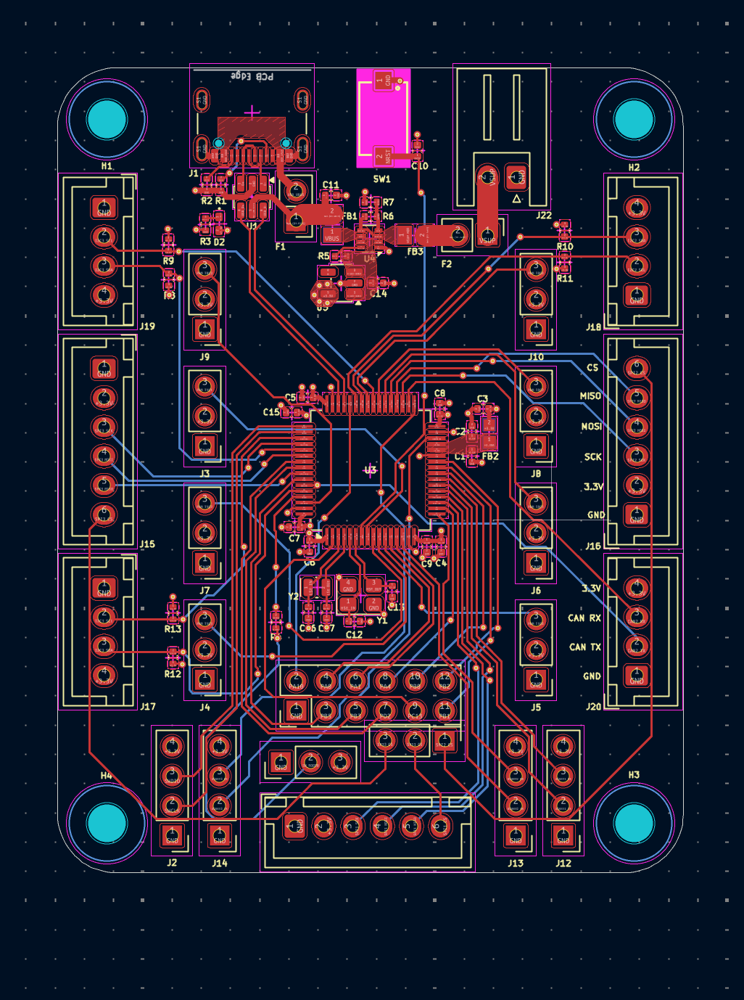

SEDS Lunabotics - Electrical
I²C Power & Communication Hub
Overview
Designed a modular I²C communication and power distribution hub using a Raspberry Pi and TCA9548A multiplexer to support multiple downstream boards with address isolation and improved bus reliability.
Key Features
- Modular Design: I²C communication and power distribution hub
- Raspberry Pi Integration: Central control using Raspberry Pi
- TCA9548A Multiplexer: Address isolation for multiple devices
- Full PCB Design: Complete schematic and PCB layout in KiCad
- Configurable Power: Jumper-selectable 3.3V/5V power distribution
- Bus Reliability: Configurable pull-ups, reset handling, and bus protection
Technical Details
- Developed full schematic and PCB in KiCad
- Implemented configurable pull-ups and reset handling
- Designed for reliable multi-device I²C operation
- Enabled seamless hardware-software integration with ROS2 drivers and control nodes

Beacon Board
Overview
The beacon board supports 3 external UWB beacons communicating with 4 UWB beacons on the robot corners for triangulation and robot position tracking on the field.
Key Features
- UWB Communication: Communication between 3 external and 4 on-robot UWB beacons
- Triangulation System: Robot position tracking on the field
- Microcontroller Control: Circuit controlling the UWB beacons
- LiPo Battery: Rechargeable LiPo with charging circuit
- Full PCB Design: Complete schematic and PCB layout in KiCad
